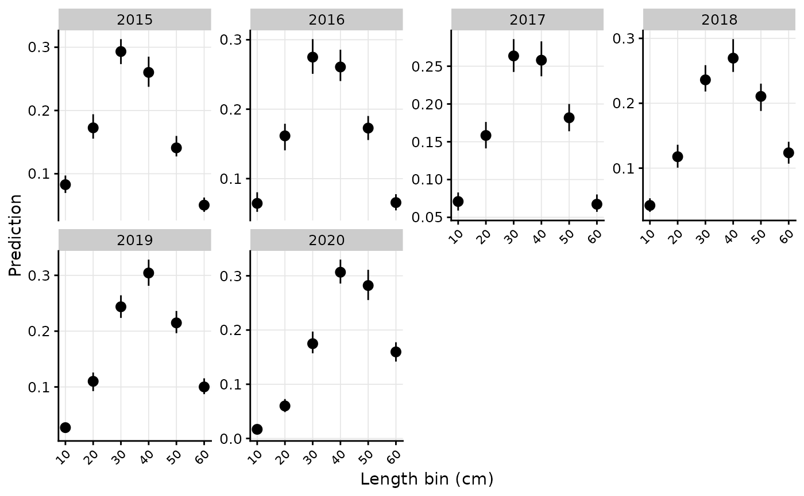
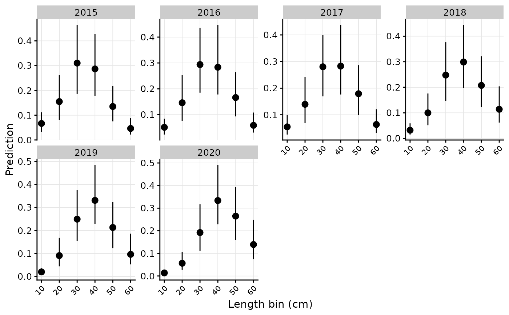

Scale predicted compositions to catch or to an index population
Source:R/post_proc.R
scale_comps.RdPredicts numbers-at-bin from a fitted model and weights the predictions.
The result is a set of draws of numbers-at-bin per stratum (or grid cell),
which can be summed over any subset of grps and normalised to obtain
compositions (e.g. with scaled_comp_plot()).
Usage
scale_comps(
scale_df,
predvar = "catch",
fit = NULL,
grps = NULL,
iters = NULL,
pgrid = NULL,
remove_nuisance = FALSE,
mode = c("catch", "index"),
selectivity = NULL,
density = NULL,
reference = NULL,
grid = NULL,
weight = NULL
)Arguments
- scale_df
data frame used for catch weighting, with one or more rows per stratum, containing
grps,predvar, anycvars, and (spatial fits) the coordinate and time columns.- predvar
Column in
scale_dfused for scaling (e.g. catch)- fit
A
ComPoMobject fromfit_model()- grps
Grouping variables defining the strata (catch mode) or the output time steps and other prediction variables (index mode). Must include the
ffx_formvariables (except selectivity terms) and, for catch weighting, there_formvariables.- iters
Number of posterior draws (brms only; default uses all stored draws). For sdmTMB fits the number of draws is set by
fit_model().- pgrid
Not used; reserved for future use.
- remove_nuisance
Deprecated.
FALSEismode = "catch".TRUEismode = "index"with the random effects as selectivity terms,scale_dfasgridandpredvarasweight.- mode
"catch"or"index"; see Details.- selectivity
Character vector of model terms that are selectivity covariates, set to a reference (index mode). In catch mode, the listed terms are also set to a reference, which gives the prediction without them (see
influ_comps()).- density
Optional character vector of terms declared as density terms (index mode). They must be columns of
grid. Random effects listed here are kept.- reference
Named list of reference values for selectivity terms, e.g.
list(Gear = "trawl", sst = 15).- grid
Prediction grid for
mode = "index"; see Details. Defaults toscale_df.- weight
Column of
gridwith the weight of each row (index mode).NULLgives equal weights.
Value
A data frame of draws (.draw) with predicted numbers-at-bin
(tot_by_bin) per stratum or cell and bin. The weight per row (sum
of the weight column) is in n.
Details
mode selects between two uses.
"catch"(default)The composition of the catch. Each stratum in
scale_dfis predicted at its own level of every model term, including the nuisance random effects (re_form) and continuous covariates, and the prediction is weighted by the catch of the stratum (predvar). Every fixed-effect and nuisance variable must therefore be ingrps."index"The composition of the population that a CPUE index describes, predicted as a CPUE analysis would predict the index. Selectivity terms (
selectivity) are set to a reference. All other terms are predicted at the values ingrid. For non-spatial models,gridhas one row per index time step (e.g. Year). For spatial models,gridhas one row per cell and time step, with the coordinates, the time column and the density covariates. Cells are weighted byweight(equal weights ifNULL), which can come from a separate CPUE or abundance model.
In index mode, every fixed-effect variable and continuous covariate of the
model is either listed in selectivity or is a column of grid.
The function stops otherwise, so that the role of each term is chosen by the
user. Random effects (re_form) are selectivity terms unless they are
listed in density, in which case they are evaluated at the values in
grid. With the TMB backend, either all or none of the random effects
can be kept.
Reference values for selectivity terms are the most frequent level (factors)
or the mean (continuous covariates) in the fitted data, unless given in
reference. Random effects are set to the population level.
In both modes:
Continuous covariates (
cvars) are evaluated at their mean within each stratum or cell of the data frame supplied.Spatial and spatio-temporal fields (spatial sdmTMB fits) are evaluated at the coordinates in the data frame supplied.
Nuisance levels that were not in the fitted data (e.g. unsampled vessels)
are handled differently by the backends. brms uses, in each draw, the
posterior draw of a randomly chosen fitted level
(sample_new_levels = "uncertainty"). sdmTMB predicts such rows at
the population level of all nuisance random effects, and a warning is
issued.
Examples
dat <- data_prep(ex_comp, c("Year", "Season", "Vessel", "trip"), "length", "count")
fit <- fit_model("Year", "Season + Vessel", data = dat, backend = "TMB",
iter = 300, warmup = 100, thin = 2)
#> Model formula: tot_by_bin ~ 0 + bin + factor(Year):bin + (1 | bin:Season) + (1 | bin:Vessel)
# catch weighting: composition of the total catch of the fleet
sc <- scale_comps(ex_catch, predvar = "catch", fit = fit,
grps = c("Year", "Season", "Vessel"))
head(sc)
#> # A tibble: 6 × 9
#> Year Season Vessel bin n .row iter tot_by_bin .draw
#> <fct> <fct> <fct> <fct> <dbl> <int> <chr> <dbl> <dbl>
#> 1 2015 summer V1 10 1904 1 V1 483. 1
#> 2 2015 summer V1 10 1904 1 V2 442. 2
#> 3 2015 summer V1 10 1904 1 V3 460. 3
#> 4 2015 summer V1 10 1904 1 V4 440. 4
#> 5 2015 summer V1 10 1904 1 V5 573. 5
#> 6 2015 summer V1 10 1904 1 V6 428. 6
scaled_comp_plot(sc, grps = "Year")

# index population: Season and Vessel are selectivity terms; one cell per year
sc_pop <- scale_comps(fit = fit, mode = "index", grps = "Year",
grid = data.frame(Year = factor(2015:2020)))
scaled_comp_plot(sc_pop, grps = "Year")
